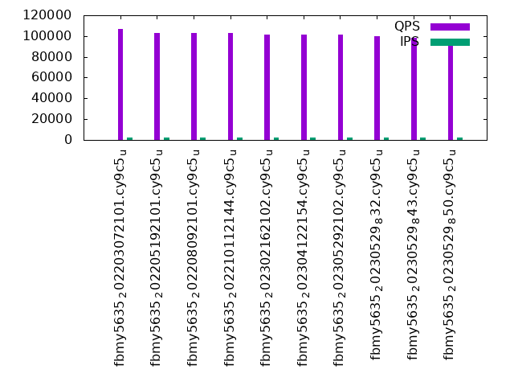

This is a report for the insert benchmark with 480M docs and 24 client(s). It is generated by scripts (bash, awk, sed) and Tufte might not be impressed. An overview of the insert benchmark is here and a short update is here. Below, by DBMS, I mean DBMS+version.config. An example is my8020.c10b40 where my means MySQL, 8020 is version 8.0.20 and c10b40 is the name for the configuration file.
The test server has 80 cores, hyperthreads enabled, 256G RAM and fast NVMe with XFS. The benchmark was run with 24 clients and there were 1 or 3 connections per client (1 for queries or inserts without rate limits, 1+1 for rate limited inserts+deletes). There are 24 tables, with a client per table. It loads 20M rows per-table without secondary indexes, creates secondary indexes, then inserts 50M rows per-table with a delete per insert to avoid growing the table. It then does 3 read+write tests for 3600s each that do queries as fast as possible with 100, 500 and then 1000 inserts/second/client concurrent with the queries and 1000 deletes/second to avoid growing the table. The database is cached by RocksDB.
The tested DBMS are:
The numbers are inserts/s for l.i0 and l.i1, indexed docs (or rows) /s for l.x and queries/s for q100, q500, q1000. The values are the average rate over the entire test for inserts (IPS) and queries (QPS). The range of values for IPS and QPS is split into 3 parts: bottom 25%, middle 50%, top 25%. Values in the bottom 25% have a red background, values in the top 25% have a green background and values in the middle have no color. A gray background is used for values that can be ignored because the DBMS did not sustain the target insert rate. Red backgrounds are not used when the minimum value is within 80% of the max value.
| dbms | l.i0 | l.x | l.i1 | q100.1 | q500.1 | q1000.1 |
|---|---|---|---|---|---|---|
| fbmy5635_202203072101.cy9c5_u | 625000 | 1446084 | 70926 | 106633 | 101783 | 90959 |
| fbmy5635_202205192101.cy9c5_u | 602258 | 1407918 | 67306 | 103226 | 98110 | 86404 |
| fbmy5635_202208092101.cy9c5_u | 594059 | 1383573 | 66611 | 102833 | 96652 | 86802 |
| fbmy5635_202210112144.cy9c5_u | 594796 | 1395640 | 66552 | 102800 | 96915 | 85967 |
| fbmy5635_202302162102.cy9c5_u | 627451 | 1407918 | 60259 | 101254 | 94654 | 86211 |
| fbmy5635_202304122154.cy9c5_u | 629921 | 1387572 | 60150 | 101065 | 95201 | 86087 |
| fbmy5635_202305292102.cy9c5_u | 629096 | 1407918 | 60347 | 101429 | 95174 | 86522 |
| fbmy5635_20230529_832.cy9c5_u | 629096 | 1399708 | 60676 | 99794 | 93432 | 84983 |
| fbmy5635_20230529_843.cy9c5_u | 625815 | 1403801 | 60356 | 98072 | 91130 | 82572 |
| fbmy5635_20230529_850.cy9c5_u | 629096 | 1383573 | 60548 | 97813 | 91815 | 82995 |
This table has relative throughput, throughput for the DBMS relative to the DBMS in the first line, using the absolute throughput from the previous table. Values less than 0.95 have a yellow background. Values greater than 1.05 have a blue background.
| dbms | l.i0 | l.x | l.i1 | q100.1 | q500.1 | q1000.1 |
|---|---|---|---|---|---|---|
| fbmy5635_202203072101.cy9c5_u | 1.00 | 1.00 | 1.00 | 1.00 | 1.00 | 1.00 |
| fbmy5635_202205192101.cy9c5_u | 0.96 | 0.97 | 0.95 | 0.97 | 0.96 | 0.95 |
| fbmy5635_202208092101.cy9c5_u | 0.95 | 0.96 | 0.94 | 0.96 | 0.95 | 0.95 |
| fbmy5635_202210112144.cy9c5_u | 0.95 | 0.97 | 0.94 | 0.96 | 0.95 | 0.95 |
| fbmy5635_202302162102.cy9c5_u | 1.00 | 0.97 | 0.85 | 0.95 | 0.93 | 0.95 |
| fbmy5635_202304122154.cy9c5_u | 1.01 | 0.96 | 0.85 | 0.95 | 0.94 | 0.95 |
| fbmy5635_202305292102.cy9c5_u | 1.01 | 0.97 | 0.85 | 0.95 | 0.94 | 0.95 |
| fbmy5635_20230529_832.cy9c5_u | 1.01 | 0.97 | 0.86 | 0.94 | 0.92 | 0.93 |
| fbmy5635_20230529_843.cy9c5_u | 1.00 | 0.97 | 0.85 | 0.92 | 0.90 | 0.91 |
| fbmy5635_20230529_850.cy9c5_u | 1.01 | 0.96 | 0.85 | 0.92 | 0.90 | 0.91 |
This lists the average rate of inserts/s for the tests that do inserts concurrent with queries. For such tests the query rate is listed in the table above. The read+write tests are setup so that the insert rate should match the target rate every second. Cells that are not at least 95% of the target have a red background to indicate a failure to satisfy the target.
| dbms | q100.1 | q500.1 | q1000.1 |
|---|---|---|---|
| fbmy5635_202203072101.cy9c5_u | 2381 | 11907 | 23834 |
| fbmy5635_202205192101.cy9c5_u | 2381 | 11907 | 23828 |
| fbmy5635_202208092101.cy9c5_u | 2381 | 11907 | 23828 |
| fbmy5635_202210112144.cy9c5_u | 2381 | 11907 | 23821 |
| fbmy5635_202302162102.cy9c5_u | 2381 | 11911 | 23828 |
| fbmy5635_202304122154.cy9c5_u | 2381 | 11907 | 23828 |
| fbmy5635_202305292102.cy9c5_u | 2381 | 11907 | 23828 |
| fbmy5635_20230529_832.cy9c5_u | 2381 | 11907 | 23828 |
| fbmy5635_20230529_843.cy9c5_u | 2381 | 11907 | 23828 |
| fbmy5635_20230529_850.cy9c5_u | 2381 | 11911 | 23828 |
| target | 2400 | 12000 | 24000 |
l.i0: load without secondary indexes. Graphs for performance per 1-second interval are here.
Average throughput:
Insert response time histogram: each cell has the percentage of responses that take <= the time in the header and max is the max response time in seconds. For the max column values in the top 25% of the range have a red background and in the bottom 25% of the range have a green background. The red background is not used when the min value is within 80% of the max value.
| dbms | 256us | 1ms | 4ms | 16ms | 64ms | 256ms | 1s | 4s | 16s | gt | max |
|---|---|---|---|---|---|---|---|---|---|---|---|
| fbmy5635_202203072101.cy9c5_u | 0.279 | 76.342 | 23.337 | nonzero | 0.042 | 0.095 | |||||
| fbmy5635_202205192101.cy9c5_u | 0.228 | 67.543 | 32.187 | nonzero | 0.041 | 0.101 | |||||
| fbmy5635_202208092101.cy9c5_u | 0.256 | 65.290 | 34.411 | 0.001 | 0.041 | 0.118 | |||||
| fbmy5635_202210112144.cy9c5_u | 0.232 | 65.459 | 34.268 | nonzero | 0.041 | 0.097 | |||||
| fbmy5635_202302162102.cy9c5_u | 0.182 | 77.188 | 22.589 | 0.042 | 0.107 | ||||||
| fbmy5635_202304122154.cy9c5_u | 0.197 | 76.798 | 22.962 | nonzero | 0.042 | 0.100 | |||||
| fbmy5635_202305292102.cy9c5_u | 0.159 | 78.167 | 21.632 | 0.042 | 0.097 | ||||||
| fbmy5635_20230529_832.cy9c5_u | 0.147 | 77.442 | 22.369 | 0.042 | 0.093 | ||||||
| fbmy5635_20230529_843.cy9c5_u | 0.131 | 76.359 | 23.468 | nonzero | 0.042 | 0.093 | |||||
| fbmy5635_20230529_850.cy9c5_u | 0.116 | 78.095 | 21.747 | nonzero | 0.042 | 0.105 |
Performance metrics for the DBMS listed above. Some are normalized by throughput, others are not. Legend for results is here.
ips qps rps rmbps wps wmbps rpq rkbpq wpi wkbpi csps cpups cspq cpupq dbgb1 dbgb2 rss maxop p50 p99 tag 625000 0 0 0.0 2581.0 308.5 0.000 0.000 0.004 0.505 520990 40.6 0.834 52 15.4 16.6 5.0 0.095 26773 17882 480m.fbmy5635_202203072101.cy9c5_u 602258 0 0 0.0 2462.1 295.3 0.000 0.000 0.004 0.502 551306 40.9 0.915 54 15.5 16.7 5.0 0.101 25474 18981 480m.fbmy5635_202205192101.cy9c5_u 594059 0 0 0.0 2440.1 293.6 0.000 0.000 0.004 0.506 542619 40.4 0.913 54 15.5 16.7 5.1 0.118 25375 18182 480m.fbmy5635_202208092101.cy9c5_u 594796 0 0 0.0 2445.1 294.0 0.000 0.000 0.004 0.506 538647 40.8 0.906 55 15.5 16.6 5.1 0.097 25674 15795 480m.fbmy5635_202210112144.cy9c5_u 627451 0 0 0.0 2166.0 260.5 0.000 0.000 0.003 0.425 304374 36.7 0.485 47 15.1 16.2 4.1 0.107 26973 20979 480m.fbmy5635_202302162102.cy9c5_u 629921 0 0 0.0 2134.4 256.8 0.000 0.000 0.003 0.418 273976 36.0 0.435 46 15.1 16.2 4.0 0.100 26773 21578 480m.fbmy5635_202304122154.cy9c5_u 629096 0 0 0.0 2100.9 252.8 0.000 0.000 0.003 0.412 272469 35.9 0.433 46 15.1 16.3 4.0 0.097 26970 19081 480m.fbmy5635_202305292102.cy9c5_u 629096 0 0 0.0 2146.3 257.8 0.000 0.000 0.003 0.420 320495 38.7 0.509 49 15.2 16.4 4.0 0.093 26973 21678 480m.fbmy5635_20230529_832.cy9c5_u 625815 0 0 0.0 2120.7 254.4 0.000 0.000 0.003 0.416 309669 39.0 0.495 50 15.3 16.4 4.0 0.093 26873 20380 480m.fbmy5635_20230529_843.cy9c5_u 629096 0 0 0.0 2173.5 261.2 0.000 0.000 0.003 0.425 297238 38.5 0.472 49 15.1 16.3 4.1 0.105 27173 21878 480m.fbmy5635_20230529_850.cy9c5_u
l.x: create secondary indexes.
Average throughput:
Performance metrics for the DBMS listed above. Some are normalized by throughput, others are not. Legend for results is here.
ips qps rps rmbps wps wmbps rpq rkbpq wpi wkbpi csps cpups cspq cpupq dbgb1 dbgb2 rss maxop p50 p99 tag 1446084 0 30 0.2 1915.0 209.8 0.000 0.000 0.001 0.149 35049 29.3 0.024 16 32.4 33.5 44.8 0.002 NA NA 480m.fbmy5635_202203072101.cy9c5_u 1407918 0 29 0.2 1882.2 205.7 0.000 0.000 0.001 0.150 33551 28.9 0.024 16 32.4 33.5 42.4 0.003 NA NA 480m.fbmy5635_202205192101.cy9c5_u 1383573 0 29 0.2 1866.3 203.9 0.000 0.000 0.001 0.151 34248 28.7 0.025 17 32.4 33.5 44.2 0.002 NA NA 480m.fbmy5635_202208092101.cy9c5_u 1395640 0 29 0.2 1864.7 204.6 0.000 0.000 0.001 0.150 32308 27.7 0.023 16 32.4 33.5 44.3 0.003 NA NA 480m.fbmy5635_202210112144.cy9c5_u 1407918 0 29 0.2 1780.7 194.2 0.000 0.000 0.001 0.141 32061 27.9 0.023 16 32.4 33.5 40.3 0.003 NA NA 480m.fbmy5635_202302162102.cy9c5_u 1387572 0 29 0.2 1754.9 191.4 0.000 0.000 0.001 0.141 33748 28.5 0.024 16 32.4 33.5 40.1 0.002 NA NA 480m.fbmy5635_202304122154.cy9c5_u 1407918 0 29 0.2 1782.2 194.3 0.000 0.000 0.001 0.141 32810 28.1 0.023 16 32.4 33.5 39.8 0.003 NA NA 480m.fbmy5635_202305292102.cy9c5_u 1399708 0 29 0.2 1757.5 191.6 0.000 0.000 0.001 0.140 35248 29.0 0.025 17 32.4 33.5 40.1 0.003 NA NA 480m.fbmy5635_20230529_832.cy9c5_u 1403801 0 29 0.2 1799.5 196.6 0.000 0.000 0.001 0.143 33235 28.8 0.024 16 32.3 33.4 41.3 0.002 NA NA 480m.fbmy5635_20230529_843.cy9c5_u 1383573 0 29 0.2 1757.0 191.4 0.000 0.000 0.001 0.142 33042 29.4 0.024 17 32.3 33.5 38.6 0.003 NA NA 480m.fbmy5635_20230529_850.cy9c5_u
l.i1: continue load after secondary indexes created. Graphs for performance per 1-second interval are here.
Average throughput:
Insert response time histogram: each cell has the percentage of responses that take <= the time in the header and max is the max response time in seconds. For the max column values in the top 25% of the range have a red background and in the bottom 25% of the range have a green background. The red background is not used when the min value is within 80% of the max value.
| dbms | 256us | 1ms | 4ms | 16ms | 64ms | 256ms | 1s | 4s | 16s | gt | max |
|---|---|---|---|---|---|---|---|---|---|---|---|
| fbmy5635_202203072101.cy9c5_u | nonzero | 0.048 | 32.060 | 67.891 | 0.001 | 0.104 | |||||
| fbmy5635_202205192101.cy9c5_u | nonzero | 0.040 | 24.119 | 75.836 | 0.004 | 0.139 | |||||
| fbmy5635_202208092101.cy9c5_u | 0.036 | 22.820 | 77.140 | 0.004 | 0.144 | ||||||
| fbmy5635_202210112144.cy9c5_u | 0.040 | 22.756 | 77.202 | 0.003 | 0.177 | ||||||
| fbmy5635_202302162102.cy9c5_u | 0.030 | 12.275 | 87.693 | 0.003 | 0.163 | ||||||
| fbmy5635_202304122154.cy9c5_u | 0.025 | 12.047 | 87.924 | 0.003 | 0.152 | ||||||
| fbmy5635_202305292102.cy9c5_u | 0.029 | 12.452 | 87.515 | 0.004 | 0.171 | ||||||
| fbmy5635_20230529_832.cy9c5_u | 0.032 | 13.465 | 86.498 | 0.005 | 0.198 | ||||||
| fbmy5635_20230529_843.cy9c5_u | 0.029 | 12.799 | 87.168 | 0.005 | 0.171 | ||||||
| fbmy5635_20230529_850.cy9c5_u | 0.028 | 13.054 | 86.915 | 0.004 | 0.147 |
Delete response time histogram: each cell has the percentage of responses that take <= the time in the header and max is the max response time in seconds. For the max column values in the top 25% of the range have a red background and in the bottom 25% of the range have a green background. The red background is not used when the min value is within 80% of the max value.
| dbms | 256us | 1ms | 4ms | 16ms | 64ms | 256ms | 1s | 4s | 16s | gt | max |
|---|---|---|---|---|---|---|---|---|---|---|---|
| fbmy5635_202203072101.cy9c5_u | 0.001 | 0.048 | 37.092 | 62.858 | 0.002 | nonzero | 0.288 | ||||
| fbmy5635_202205192101.cy9c5_u | nonzero | 0.040 | 27.384 | 72.570 | 0.005 | 0.163 | |||||
| fbmy5635_202208092101.cy9c5_u | 0.002 | 0.036 | 25.701 | 74.257 | 0.004 | nonzero | 0.271 | ||||
| fbmy5635_202210112144.cy9c5_u | nonzero | 0.040 | 25.760 | 74.196 | 0.003 | nonzero | 0.305 | ||||
| fbmy5635_202302162102.cy9c5_u | nonzero | 0.030 | 13.847 | 86.121 | 0.003 | 0.191 | |||||
| fbmy5635_202304122154.cy9c5_u | nonzero | 0.026 | 13.549 | 86.421 | 0.004 | 0.184 | |||||
| fbmy5635_202305292102.cy9c5_u | nonzero | 0.029 | 14.001 | 85.965 | 0.004 | 0.187 | |||||
| fbmy5635_20230529_832.cy9c5_u | nonzero | 0.033 | 15.184 | 84.777 | 0.006 | nonzero | 0.283 | ||||
| fbmy5635_20230529_843.cy9c5_u | nonzero | 0.029 | 14.428 | 85.537 | 0.005 | 0.197 | |||||
| fbmy5635_20230529_850.cy9c5_u | nonzero | 0.029 | 14.662 | 85.305 | 0.004 | 0.206 |
Performance metrics for the DBMS listed above. Some are normalized by throughput, others are not. Legend for results is here.
ips qps rps rmbps wps wmbps rpq rkbpq wpi wkbpi csps cpups cspq cpupq dbgb1 dbgb2 rss maxop p50 p99 tag 70926 0 111 1.3 1941.7 232.5 0.002 0.019 0.027 3.357 144995 16.4 2.044 185 37.6 37.7 177.0 0.104 2947 2647 480m.fbmy5635_202203072101.cy9c5_u 67306 0 78 1.0 1840.4 220.8 0.001 0.016 0.027 3.359 138867 16.6 2.063 197 40.2 40.2 176.9 0.139 2797 2498 480m.fbmy5635_202205192101.cy9c5_u 66611 0 85 1.1 1833.1 219.3 0.001 0.016 0.028 3.372 137389 16.6 2.063 199 39.7 39.8 177.0 0.144 2797 2497 480m.fbmy5635_202208092101.cy9c5_u 66552 0 87 1.1 1822.9 217.6 0.001 0.017 0.027 3.348 137200 16.5 2.062 198 37.5 37.6 177.1 0.177 2797 2497 480m.fbmy5635_202210112144.cy9c5_u 60259 0 47 0.9 1479.3 174.8 0.001 0.015 0.025 2.971 120418 15.4 1.998 204 39.8 39.9 177.2 0.163 2547 2248 480m.fbmy5635_202302162102.cy9c5_u 60150 0 49 0.9 1478.4 173.8 0.001 0.015 0.025 2.959 119609 15.4 1.989 205 38.1 38.2 177.3 0.152 2498 2247 480m.fbmy5635_202304122154.cy9c5_u 60347 0 49 0.9 1476.6 174.3 0.001 0.015 0.024 2.958 120209 15.7 1.992 208 40.1 40.2 177.2 0.171 2547 2248 480m.fbmy5635_202305292102.cy9c5_u 60676 0 51 0.9 1479.6 175.9 0.001 0.015 0.024 2.969 121536 16.5 2.003 218 37.9 38.1 177.2 0.198 2547 2248 480m.fbmy5635_20230529_832.cy9c5_u 60356 0 59 0.9 1460.0 171.7 0.001 0.016 0.024 2.913 117643 16.7 1.949 221 37.9 38.0 177.2 0.171 2547 2247 480m.fbmy5635_20230529_843.cy9c5_u 60548 0 61 0.9 1474.2 174.8 0.001 0.016 0.024 2.956 113997 16.5 1.883 218 40.3 40.4 177.3 0.147 2547 2248 480m.fbmy5635_20230529_850.cy9c5_u
q100.1: range queries with 100 insert/s per client. Graphs for performance per 1-second interval are here.
Average throughput:
Query response time histogram: each cell has the percentage of responses that take <= the time in the header and max is the max response time in seconds. For max values in the top 25% of the range have a red background and in the bottom 25% of the range have a green background. The red background is not used when the min value is within 80% of the max value.
| dbms | 256us | 1ms | 4ms | 16ms | 64ms | 256ms | 1s | 4s | 16s | gt | max |
|---|---|---|---|---|---|---|---|---|---|---|---|
| fbmy5635_202203072101.cy9c5_u | 84.258 | 15.741 | 0.001 | nonzero | nonzero | 0.026 | |||||
| fbmy5635_202205192101.cy9c5_u | 79.305 | 20.694 | 0.001 | nonzero | nonzero | 0.057 | |||||
| fbmy5635_202208092101.cy9c5_u | 79.004 | 20.995 | 0.001 | nonzero | nonzero | 0.060 | |||||
| fbmy5635_202210112144.cy9c5_u | 78.872 | 21.127 | 0.001 | nonzero | 0.010 | ||||||
| fbmy5635_202302162102.cy9c5_u | 76.073 | 23.926 | 0.001 | nonzero | nonzero | 0.060 | |||||
| fbmy5635_202304122154.cy9c5_u | 75.822 | 24.177 | 0.001 | nonzero | 0.009 | ||||||
| fbmy5635_202305292102.cy9c5_u | 76.491 | 23.508 | 0.001 | nonzero | nonzero | 0.054 | |||||
| fbmy5635_20230529_832.cy9c5_u | 73.948 | 26.051 | 0.001 | nonzero | nonzero | 0.025 | |||||
| fbmy5635_20230529_843.cy9c5_u | 71.108 | 28.890 | 0.001 | nonzero | nonzero | nonzero | 0.086 | ||||
| fbmy5635_20230529_850.cy9c5_u | 70.633 | 29.366 | 0.001 | nonzero | nonzero | nonzero | 0.065 |
Insert response time histogram: each cell has the percentage of responses that take <= the time in the header and max is the max response time in seconds. For max values in the top 25% of the range have a red background and in the bottom 25% of the range have a green background. The red background is not used when the min value is within 80% of the max value.
| dbms | 256us | 1ms | 4ms | 16ms | 64ms | 256ms | 1s | 4s | 16s | gt | max |
|---|---|---|---|---|---|---|---|---|---|---|---|
| fbmy5635_202203072101.cy9c5_u | 99.997 | 0.003 | 0.006 | ||||||||
| fbmy5635_202205192101.cy9c5_u | 99.992 | 0.008 | 0.009 | ||||||||
| fbmy5635_202208092101.cy9c5_u | 99.996 | 0.004 | 0.006 | ||||||||
| fbmy5635_202210112144.cy9c5_u | 99.997 | 0.003 | 0.008 | ||||||||
| fbmy5635_202302162102.cy9c5_u | 99.862 | 0.138 | 0.006 | ||||||||
| fbmy5635_202304122154.cy9c5_u | 99.175 | 0.825 | 0.008 | ||||||||
| fbmy5635_202305292102.cy9c5_u | 99.970 | 0.027 | 0.003 | 0.060 | |||||||
| fbmy5635_20230529_832.cy9c5_u | 99.988 | 0.012 | 0.007 | ||||||||
| fbmy5635_20230529_843.cy9c5_u | 95.807 | 4.193 | 0.009 | ||||||||
| fbmy5635_20230529_850.cy9c5_u | 99.885 | 0.115 | 0.008 |
Delete response time histogram: each cell has the percentage of responses that take <= the time in the header and max is the max response time in seconds. For max values in the top 25% of the range have a red background and in the bottom 25% of the range have a green background. The red background is not used when the min value is within 80% of the max value.
| dbms | 256us | 1ms | 4ms | 16ms | 64ms | 256ms | 1s | 4s | 16s | gt | max |
|---|---|---|---|---|---|---|---|---|---|---|---|
| fbmy5635_202203072101.cy9c5_u | 0.126 | 99.867 | 0.004 | 0.003 | 0.001 | 0.066 | |||||
| fbmy5635_202205192101.cy9c5_u | 0.005 | 99.986 | 0.006 | 0.003 | 0.058 | ||||||
| fbmy5635_202208092101.cy9c5_u | 0.002 | 99.990 | 0.004 | 0.004 | 0.042 | ||||||
| fbmy5635_202210112144.cy9c5_u | 0.003 | 99.992 | 0.003 | 0.001 | 0.001 | 0.066 | |||||
| fbmy5635_202302162102.cy9c5_u | 0.002 | 99.945 | 0.051 | 0.002 | 0.056 | ||||||
| fbmy5635_202304122154.cy9c5_u | 0.002 | 99.482 | 0.514 | 0.002 | 0.001 | 0.073 | |||||
| fbmy5635_202305292102.cy9c5_u | 99.973 | 0.021 | 0.006 | 0.061 | |||||||
| fbmy5635_20230529_832.cy9c5_u | 99.994 | 0.006 | 0.001 | 0.047 | |||||||
| fbmy5635_20230529_843.cy9c5_u | 0.001 | 97.117 | 2.879 | 0.002 | 0.054 | ||||||
| fbmy5635_20230529_850.cy9c5_u | 99.956 | 0.042 | 0.002 | 0.058 |
Performance metrics for the DBMS listed above. Some are normalized by throughput, others are not. Legend for results is here.
ips qps rps rmbps wps wmbps rpq rkbpq wpi wkbpi csps cpups cspq cpupq dbgb1 dbgb2 rss maxop p50 p99 tag 2381 106633 8 0.1 98.7 11.2 0.000 0.001 0.041 4.831 485280 31.7 4.551 238 35.9 37.8 178.3 0.026 4444 3900 480m.fbmy5635_202203072101.cy9c5_u 2381 103226 7 0.1 100.0 11.4 0.000 0.001 0.042 4.903 473926 31.7 4.591 246 35.9 37.8 178.3 0.057 4332 3773 480m.fbmy5635_202205192101.cy9c5_u 2381 102833 5 0.1 97.5 10.9 0.000 0.001 0.041 4.669 465531 31.7 4.527 247 36.0 37.9 178.3 0.060 4332 3788 480m.fbmy5635_202208092101.cy9c5_u 2381 102800 5 0.1 97.1 10.8 0.000 0.001 0.041 4.640 465340 31.7 4.527 247 36.0 37.9 178.2 0.010 4284 3788 480m.fbmy5635_202210112144.cy9c5_u 2381 101254 16 0.4 78.3 8.7 0.000 0.004 0.033 3.728 450915 31.7 4.453 250 37.1 39.0 178.6 0.060 4252 3756 480m.fbmy5635_202302162102.cy9c5_u 2381 101065 15 0.3 80.5 9.0 0.000 0.003 0.034 3.851 450095 31.8 4.454 252 37.2 39.1 178.7 0.009 4236 3756 480m.fbmy5635_202304122154.cy9c5_u 2381 101429 12 0.3 81.0 9.0 0.000 0.003 0.034 3.873 454795 31.7 4.484 250 37.1 39.1 178.6 0.054 4268 3757 480m.fbmy5635_202305292102.cy9c5_u 2381 99794 12 0.3 79.7 8.9 0.000 0.003 0.033 3.807 446468 32.3 4.474 259 37.1 39.1 178.6 0.025 4172 3708 480m.fbmy5635_20230529_832.cy9c5_u 2381 98072 15 0.4 80.2 8.9 0.000 0.004 0.034 3.833 436893 32.2 4.455 263 37.1 39.0 178.7 0.086 4123 3628 480m.fbmy5635_20230529_843.cy9c5_u 2381 97813 41 0.4 76.7 8.5 0.000 0.004 0.032 3.641 435657 32.2 4.454 263 37.1 39.1 178.7 0.065 4092 3612 480m.fbmy5635_20230529_850.cy9c5_u
q500.1: range queries with 500 insert/s per client. Graphs for performance per 1-second interval are here.
Average throughput:
Query response time histogram: each cell has the percentage of responses that take <= the time in the header and max is the max response time in seconds. For max values in the top 25% of the range have a red background and in the bottom 25% of the range have a green background. The red background is not used when the min value is within 80% of the max value.
| dbms | 256us | 1ms | 4ms | 16ms | 64ms | 256ms | 1s | 4s | 16s | gt | max |
|---|---|---|---|---|---|---|---|---|---|---|---|
| fbmy5635_202203072101.cy9c5_u | 77.742 | 22.256 | 0.001 | nonzero | nonzero | nonzero | 0.080 | ||||
| fbmy5635_202205192101.cy9c5_u | 71.078 | 28.920 | 0.002 | nonzero | nonzero | nonzero | 0.082 | ||||
| fbmy5635_202208092101.cy9c5_u | 68.751 | 31.247 | 0.001 | nonzero | nonzero | nonzero | 0.084 | ||||
| fbmy5635_202210112144.cy9c5_u | 69.110 | 30.888 | 0.001 | nonzero | nonzero | nonzero | 0.083 | ||||
| fbmy5635_202302162102.cy9c5_u | 64.436 | 35.561 | 0.002 | nonzero | nonzero | nonzero | 0.097 | ||||
| fbmy5635_202304122154.cy9c5_u | 65.732 | 34.266 | 0.002 | nonzero | nonzero | nonzero | 0.079 | ||||
| fbmy5635_202305292102.cy9c5_u | 65.628 | 34.369 | 0.002 | nonzero | nonzero | nonzero | 0.083 | ||||
| fbmy5635_20230529_832.cy9c5_u | 62.240 | 37.757 | 0.002 | nonzero | nonzero | nonzero | 0.084 | ||||
| fbmy5635_20230529_843.cy9c5_u | 57.558 | 42.438 | 0.003 | nonzero | nonzero | nonzero | 0.086 | ||||
| fbmy5635_20230529_850.cy9c5_u | 58.980 | 41.018 | 0.002 | nonzero | nonzero | nonzero | 0.089 |
Insert response time histogram: each cell has the percentage of responses that take <= the time in the header and max is the max response time in seconds. For max values in the top 25% of the range have a red background and in the bottom 25% of the range have a green background. The red background is not used when the min value is within 80% of the max value.
| dbms | 256us | 1ms | 4ms | 16ms | 64ms | 256ms | 1s | 4s | 16s | gt | max |
|---|---|---|---|---|---|---|---|---|---|---|---|
| fbmy5635_202203072101.cy9c5_u | 99.519 | 0.478 | 0.002 | 0.001 | 0.079 | ||||||
| fbmy5635_202205192101.cy9c5_u | 99.915 | 0.082 | 0.002 | 0.001 | 0.079 | ||||||
| fbmy5635_202208092101.cy9c5_u | 99.501 | 0.494 | 0.004 | 0.001 | 0.083 | ||||||
| fbmy5635_202210112144.cy9c5_u | 99.103 | 0.894 | 0.001 | 0.001 | 0.082 | ||||||
| fbmy5635_202302162102.cy9c5_u | 17.532 | 49.696 | 32.769 | 0.004 | 0.099 | ||||||
| fbmy5635_202304122154.cy9c5_u | 29.388 | 69.977 | 0.634 | 0.001 | 0.083 | ||||||
| fbmy5635_202305292102.cy9c5_u | 25.919 | 62.280 | 11.800 | 0.002 | 0.092 | ||||||
| fbmy5635_20230529_832.cy9c5_u | 23.429 | 72.725 | 3.846 | 0.001 | 0.093 | ||||||
| fbmy5635_20230529_843.cy9c5_u | 20.928 | 49.853 | 29.217 | 0.002 | 0.093 | ||||||
| fbmy5635_20230529_850.cy9c5_u | 52.711 | 47.268 | 0.020 | 0.002 | 0.091 |
Delete response time histogram: each cell has the percentage of responses that take <= the time in the header and max is the max response time in seconds. For max values in the top 25% of the range have a red background and in the bottom 25% of the range have a green background. The red background is not used when the min value is within 80% of the max value.
| dbms | 256us | 1ms | 4ms | 16ms | 64ms | 256ms | 1s | 4s | 16s | gt | max |
|---|---|---|---|---|---|---|---|---|---|---|---|
| fbmy5635_202203072101.cy9c5_u | 0.064 | 99.676 | 0.249 | 0.009 | 0.002 | 0.089 | |||||
| fbmy5635_202205192101.cy9c5_u | 0.002 | 99.930 | 0.055 | 0.010 | 0.003 | 0.100 | |||||
| fbmy5635_202208092101.cy9c5_u | 0.001 | 99.658 | 0.327 | 0.012 | 0.002 | 0.089 | |||||
| fbmy5635_202210112144.cy9c5_u | 0.001 | 99.332 | 0.655 | 0.010 | 0.003 | 0.096 | |||||
| fbmy5635_202302162102.cy9c5_u | nonzero | 18.561 | 50.815 | 30.616 | 0.007 | 0.099 | |||||
| fbmy5635_202304122154.cy9c5_u | 33.314 | 66.131 | 0.552 | 0.003 | 0.094 | ||||||
| fbmy5635_202305292102.cy9c5_u | 27.526 | 61.794 | 10.677 | 0.003 | 0.089 | ||||||
| fbmy5635_20230529_832.cy9c5_u | 25.632 | 70.974 | 3.392 | 0.003 | 0.095 | ||||||
| fbmy5635_20230529_843.cy9c5_u | 21.880 | 50.977 | 27.138 | 0.005 | 0.101 | ||||||
| fbmy5635_20230529_850.cy9c5_u | 57.657 | 42.313 | 0.028 | 0.002 | 0.091 |
Performance metrics for the DBMS listed above. Some are normalized by throughput, others are not. Legend for results is here.
ips qps rps rmbps wps wmbps rpq rkbpq wpi wkbpi csps cpups cspq cpupq dbgb1 dbgb2 rss maxop p50 p99 tag 11907 101783 32 0.3 380.4 44.7 0.000 0.003 0.032 3.844 476828 33.3 4.685 262 36.1 37.2 183.5 0.080 4268 3692 480m.fbmy5635_202203072101.cy9c5_u 11907 98110 26 0.3 376.1 44.2 0.000 0.003 0.032 3.803 464842 33.4 4.738 272 36.2 37.4 183.3 0.082 4108 3534 480m.fbmy5635_202205192101.cy9c5_u 11907 96652 24 0.3 374.4 43.6 0.000 0.003 0.031 3.751 452705 33.5 4.684 277 36.5 37.6 183.4 0.084 3996 3421 480m.fbmy5635_202208092101.cy9c5_u 11907 96915 25 0.3 381.6 44.6 0.000 0.003 0.032 3.835 454727 33.6 4.692 277 36.3 37.4 183.4 0.083 4060 3532 480m.fbmy5635_202210112144.cy9c5_u 11911 94654 15 0.2 330.9 38.5 0.000 0.002 0.028 3.311 440685 33.9 4.656 287 37.3 38.4 183.1 0.097 3951 3389 480m.fbmy5635_202302162102.cy9c5_u 11907 95201 13 0.2 328.5 38.2 0.000 0.002 0.028 3.286 440034 33.7 4.622 283 37.6 38.8 183.1 0.079 3996 3421 480m.fbmy5635_202304122154.cy9c5_u 11907 95174 15 0.2 329.6 38.4 0.000 0.002 0.028 3.298 444161 33.9 4.667 285 37.5 38.7 183.2 0.083 3996 3453 480m.fbmy5635_202305292102.cy9c5_u 11907 93432 16 0.3 324.1 37.6 0.000 0.003 0.027 3.235 435582 34.5 4.662 295 37.2 38.5 183.1 0.084 3916 3357 480m.fbmy5635_20230529_832.cy9c5_u 11907 91130 12 0.2 327.4 37.9 0.000 0.002 0.027 3.259 424299 34.5 4.656 303 37.5 38.7 183.0 0.086 3820 3229 480m.fbmy5635_20230529_843.cy9c5_u 11911 91815 58 0.3 322.0 37.3 0.001 0.003 0.027 3.211 423559 34.2 4.613 298 37.4 38.6 183.0 0.089 3836 3277 480m.fbmy5635_20230529_850.cy9c5_u
q1000.1: range queries with 1000 insert/s per client. Graphs for performance per 1-second interval are here.
Average throughput:
Query response time histogram: each cell has the percentage of responses that take <= the time in the header and max is the max response time in seconds. For max values in the top 25% of the range have a red background and in the bottom 25% of the range have a green background. The red background is not used when the min value is within 80% of the max value.
| dbms | 256us | 1ms | 4ms | 16ms | 64ms | 256ms | 1s | 4s | 16s | gt | max |
|---|---|---|---|---|---|---|---|---|---|---|---|
| fbmy5635_202203072101.cy9c5_u | 56.838 | 43.157 | 0.005 | nonzero | nonzero | nonzero | 0.079 | ||||
| fbmy5635_202205192101.cy9c5_u | 46.547 | 53.444 | 0.009 | nonzero | nonzero | nonzero | 0.129 | ||||
| fbmy5635_202208092101.cy9c5_u | 47.489 | 52.507 | 0.005 | nonzero | nonzero | nonzero | 0.083 | ||||
| fbmy5635_202210112144.cy9c5_u | 45.682 | 54.311 | 0.007 | nonzero | nonzero | nonzero | 0.077 | ||||
| fbmy5635_202302162102.cy9c5_u | 46.086 | 53.903 | 0.011 | nonzero | nonzero | nonzero | 0.106 | ||||
| fbmy5635_202304122154.cy9c5_u | 45.895 | 54.095 | 0.010 | nonzero | nonzero | nonzero | 0.094 | ||||
| fbmy5635_202305292102.cy9c5_u | 46.818 | 53.170 | 0.011 | nonzero | nonzero | nonzero | 0.105 | ||||
| fbmy5635_20230529_832.cy9c5_u | 43.415 | 56.574 | 0.012 | nonzero | nonzero | nonzero | 0.076 | ||||
| fbmy5635_20230529_843.cy9c5_u | 37.737 | 62.248 | 0.014 | nonzero | nonzero | nonzero | 0.080 | ||||
| fbmy5635_20230529_850.cy9c5_u | 38.585 | 61.402 | 0.013 | nonzero | nonzero | nonzero | 0.136 |
Insert response time histogram: each cell has the percentage of responses that take <= the time in the header and max is the max response time in seconds. For max values in the top 25% of the range have a red background and in the bottom 25% of the range have a green background. The red background is not used when the min value is within 80% of the max value.
| dbms | 256us | 1ms | 4ms | 16ms | 64ms | 256ms | 1s | 4s | 16s | gt | max |
|---|---|---|---|---|---|---|---|---|---|---|---|
| fbmy5635_202203072101.cy9c5_u | 20.888 | 77.942 | 1.169 | 0.001 | 0.092 | ||||||
| fbmy5635_202205192101.cy9c5_u | 18.497 | 40.120 | 41.383 | 0.059 | |||||||
| fbmy5635_202208092101.cy9c5_u | 16.732 | 83.238 | 0.031 | 0.035 | |||||||
| fbmy5635_202210112144.cy9c5_u | 19.120 | 40.549 | 40.330 | nonzero | 0.087 | ||||||
| fbmy5635_202302162102.cy9c5_u | 2.066 | 12.503 | 85.428 | 0.002 | 0.106 | ||||||
| fbmy5635_202304122154.cy9c5_u | 2.053 | 16.031 | 81.910 | 0.005 | 0.128 | ||||||
| fbmy5635_202305292102.cy9c5_u | 1.392 | 9.775 | 88.827 | 0.005 | 0.111 | ||||||
| fbmy5635_20230529_832.cy9c5_u | 3.074 | 16.331 | 80.591 | 0.003 | 0.100 | ||||||
| fbmy5635_20230529_843.cy9c5_u | 1.960 | 13.596 | 84.441 | 0.003 | 0.106 | ||||||
| fbmy5635_20230529_850.cy9c5_u | 2.836 | 12.900 | 84.259 | 0.005 | 0.102 |
Delete response time histogram: each cell has the percentage of responses that take <= the time in the header and max is the max response time in seconds. For max values in the top 25% of the range have a red background and in the bottom 25% of the range have a green background. The red background is not used when the min value is within 80% of the max value.
| dbms | 256us | 1ms | 4ms | 16ms | 64ms | 256ms | 1s | 4s | 16s | gt | max |
|---|---|---|---|---|---|---|---|---|---|---|---|
| fbmy5635_202203072101.cy9c5_u | 0.003 | 23.010 | 75.890 | 1.095 | 0.002 | 0.143 | |||||
| fbmy5635_202205192101.cy9c5_u | nonzero | 18.695 | 40.642 | 40.661 | 0.001 | 0.100 | |||||
| fbmy5635_202208092101.cy9c5_u | 17.597 | 82.367 | 0.034 | 0.002 | 0.097 | ||||||
| fbmy5635_202210112144.cy9c5_u | 19.619 | 40.805 | 39.575 | 0.001 | 0.105 | ||||||
| fbmy5635_202302162102.cy9c5_u | 2.084 | 13.622 | 84.290 | 0.004 | 0.106 | ||||||
| fbmy5635_202304122154.cy9c5_u | 2.061 | 17.225 | 80.708 | 0.006 | nonzero | 0.281 | |||||
| fbmy5635_202305292102.cy9c5_u | 1.370 | 10.751 | 87.872 | 0.006 | 0.111 | ||||||
| fbmy5635_20230529_832.cy9c5_u | 3.040 | 17.556 | 79.400 | 0.004 | 0.110 | ||||||
| fbmy5635_20230529_843.cy9c5_u | 1.965 | 14.838 | 83.193 | 0.004 | 0.132 | ||||||
| fbmy5635_20230529_850.cy9c5_u | 2.783 | 14.134 | 83.077 | 0.006 | nonzero | 0.275 |
Performance metrics for the DBMS listed above. Some are normalized by throughput, others are not. Legend for results is here.
ips qps rps rmbps wps wmbps rpq rkbpq wpi wkbpi csps cpups cspq cpupq dbgb1 dbgb2 rss maxop p50 p99 tag 23834 90959 59 0.6 688.0 80.1 0.001 0.006 0.029 3.443 464525 35.9 5.107 316 37.5 39.1 185.1 0.079 3804 3229 480m.fbmy5635_202203072101.cy9c5_u 23828 86404 54 0.4 676.8 78.8 0.001 0.005 0.028 3.388 452604 36.5 5.238 338 37.9 39.6 185.2 0.129 3596 3053 480m.fbmy5635_202205192101.cy9c5_u 23828 86802 94 0.7 687.2 80.2 0.001 0.008 0.029 3.447 442854 36.2 5.102 334 37.9 39.5 185.2 0.083 3612 3069 480m.fbmy5635_202208092101.cy9c5_u 23821 85967 61 0.5 677.3 78.8 0.001 0.006 0.028 3.388 443432 36.5 5.158 340 38.2 39.9 185.2 0.077 3596 3037 480m.fbmy5635_202210112144.cy9c5_u 23828 86211 33 0.4 603.5 70.1 0.000 0.005 0.025 3.014 430150 37.0 4.990 343 38.9 40.6 185.0 0.106 3580 2973 480m.fbmy5635_202302162102.cy9c5_u 23828 86087 38 0.5 609.2 71.3 0.000 0.006 0.026 3.065 428360 37.1 4.976 345 38.3 39.9 185.2 0.094 3580 2941 480m.fbmy5635_202304122154.cy9c5_u 23828 86522 36 0.4 602.9 70.4 0.000 0.005 0.025 3.025 435161 37.2 5.029 344 38.3 39.9 185.3 0.105 3612 2989 480m.fbmy5635_202305292102.cy9c5_u 23828 84983 45 0.4 601.4 69.9 0.001 0.005 0.025 3.002 425597 37.6 5.008 354 39.1 40.8 185.3 0.076 3580 2957 480m.fbmy5635_20230529_832.cy9c5_u 23828 82572 62 0.6 612.6 71.2 0.001 0.007 0.026 3.058 413900 38.0 5.013 368 38.1 39.8 185.4 0.080 3453 2861 480m.fbmy5635_20230529_843.cy9c5_u 23828 82995 78 0.6 602.8 70.3 0.001 0.007 0.025 3.020 414509 37.7 4.994 363 39.1 40.8 185.4 0.136 3469 2861 480m.fbmy5635_20230529_850.cy9c5_u
l.i0: load without secondary indexes
Performance metrics for all DBMS, not just the ones listed above. Some are normalized by throughput, others are not. Legend for results is here.
ips qps rps rmbps wps wmbps rpq rkbpq wpi wkbpi csps cpups cspq cpupq dbgb1 dbgb2 rss maxop p50 p99 tag 625000 0 0 0.0 2581.0 308.5 0.000 0.000 0.004 0.505 520990 40.6 0.834 52 15.4 16.6 5.0 0.095 26773 17882 480m.fbmy5635_202203072101.cy9c5_u 602258 0 0 0.0 2462.1 295.3 0.000 0.000 0.004 0.502 551306 40.9 0.915 54 15.5 16.7 5.0 0.101 25474 18981 480m.fbmy5635_202205192101.cy9c5_u 594059 0 0 0.0 2440.1 293.6 0.000 0.000 0.004 0.506 542619 40.4 0.913 54 15.5 16.7 5.1 0.118 25375 18182 480m.fbmy5635_202208092101.cy9c5_u 594796 0 0 0.0 2445.1 294.0 0.000 0.000 0.004 0.506 538647 40.8 0.906 55 15.5 16.6 5.1 0.097 25674 15795 480m.fbmy5635_202210112144.cy9c5_u 627451 0 0 0.0 2166.0 260.5 0.000 0.000 0.003 0.425 304374 36.7 0.485 47 15.1 16.2 4.1 0.107 26973 20979 480m.fbmy5635_202302162102.cy9c5_u 629921 0 0 0.0 2134.4 256.8 0.000 0.000 0.003 0.418 273976 36.0 0.435 46 15.1 16.2 4.0 0.100 26773 21578 480m.fbmy5635_202304122154.cy9c5_u 629096 0 0 0.0 2100.9 252.8 0.000 0.000 0.003 0.412 272469 35.9 0.433 46 15.1 16.3 4.0 0.097 26970 19081 480m.fbmy5635_202305292102.cy9c5_u 629096 0 0 0.0 2146.3 257.8 0.000 0.000 0.003 0.420 320495 38.7 0.509 49 15.2 16.4 4.0 0.093 26973 21678 480m.fbmy5635_20230529_832.cy9c5_u 625815 0 0 0.0 2120.7 254.4 0.000 0.000 0.003 0.416 309669 39.0 0.495 50 15.3 16.4 4.0 0.093 26873 20380 480m.fbmy5635_20230529_843.cy9c5_u 629096 0 0 0.0 2173.5 261.2 0.000 0.000 0.003 0.425 297238 38.5 0.472 49 15.1 16.3 4.1 0.105 27173 21878 480m.fbmy5635_20230529_850.cy9c5_u
l.x: create secondary indexes
Performance metrics for all DBMS, not just the ones listed above. Some are normalized by throughput, others are not. Legend for results is here.
ips qps rps rmbps wps wmbps rpq rkbpq wpi wkbpi csps cpups cspq cpupq dbgb1 dbgb2 rss maxop p50 p99 tag 1446084 0 30 0.2 1915.0 209.8 0.000 0.000 0.001 0.149 35049 29.3 0.024 16 32.4 33.5 44.8 0.002 NA NA 480m.fbmy5635_202203072101.cy9c5_u 1407918 0 29 0.2 1882.2 205.7 0.000 0.000 0.001 0.150 33551 28.9 0.024 16 32.4 33.5 42.4 0.003 NA NA 480m.fbmy5635_202205192101.cy9c5_u 1383573 0 29 0.2 1866.3 203.9 0.000 0.000 0.001 0.151 34248 28.7 0.025 17 32.4 33.5 44.2 0.002 NA NA 480m.fbmy5635_202208092101.cy9c5_u 1395640 0 29 0.2 1864.7 204.6 0.000 0.000 0.001 0.150 32308 27.7 0.023 16 32.4 33.5 44.3 0.003 NA NA 480m.fbmy5635_202210112144.cy9c5_u 1407918 0 29 0.2 1780.7 194.2 0.000 0.000 0.001 0.141 32061 27.9 0.023 16 32.4 33.5 40.3 0.003 NA NA 480m.fbmy5635_202302162102.cy9c5_u 1387572 0 29 0.2 1754.9 191.4 0.000 0.000 0.001 0.141 33748 28.5 0.024 16 32.4 33.5 40.1 0.002 NA NA 480m.fbmy5635_202304122154.cy9c5_u 1407918 0 29 0.2 1782.2 194.3 0.000 0.000 0.001 0.141 32810 28.1 0.023 16 32.4 33.5 39.8 0.003 NA NA 480m.fbmy5635_202305292102.cy9c5_u 1399708 0 29 0.2 1757.5 191.6 0.000 0.000 0.001 0.140 35248 29.0 0.025 17 32.4 33.5 40.1 0.003 NA NA 480m.fbmy5635_20230529_832.cy9c5_u 1403801 0 29 0.2 1799.5 196.6 0.000 0.000 0.001 0.143 33235 28.8 0.024 16 32.3 33.4 41.3 0.002 NA NA 480m.fbmy5635_20230529_843.cy9c5_u 1383573 0 29 0.2 1757.0 191.4 0.000 0.000 0.001 0.142 33042 29.4 0.024 17 32.3 33.5 38.6 0.003 NA NA 480m.fbmy5635_20230529_850.cy9c5_u
l.i1: continue load after secondary indexes created
Performance metrics for all DBMS, not just the ones listed above. Some are normalized by throughput, others are not. Legend for results is here.
ips qps rps rmbps wps wmbps rpq rkbpq wpi wkbpi csps cpups cspq cpupq dbgb1 dbgb2 rss maxop p50 p99 tag 70926 0 111 1.3 1941.7 232.5 0.002 0.019 0.027 3.357 144995 16.4 2.044 185 37.6 37.7 177.0 0.104 2947 2647 480m.fbmy5635_202203072101.cy9c5_u 67306 0 78 1.0 1840.4 220.8 0.001 0.016 0.027 3.359 138867 16.6 2.063 197 40.2 40.2 176.9 0.139 2797 2498 480m.fbmy5635_202205192101.cy9c5_u 66611 0 85 1.1 1833.1 219.3 0.001 0.016 0.028 3.372 137389 16.6 2.063 199 39.7 39.8 177.0 0.144 2797 2497 480m.fbmy5635_202208092101.cy9c5_u 66552 0 87 1.1 1822.9 217.6 0.001 0.017 0.027 3.348 137200 16.5 2.062 198 37.5 37.6 177.1 0.177 2797 2497 480m.fbmy5635_202210112144.cy9c5_u 60259 0 47 0.9 1479.3 174.8 0.001 0.015 0.025 2.971 120418 15.4 1.998 204 39.8 39.9 177.2 0.163 2547 2248 480m.fbmy5635_202302162102.cy9c5_u 60150 0 49 0.9 1478.4 173.8 0.001 0.015 0.025 2.959 119609 15.4 1.989 205 38.1 38.2 177.3 0.152 2498 2247 480m.fbmy5635_202304122154.cy9c5_u 60347 0 49 0.9 1476.6 174.3 0.001 0.015 0.024 2.958 120209 15.7 1.992 208 40.1 40.2 177.2 0.171 2547 2248 480m.fbmy5635_202305292102.cy9c5_u 60676 0 51 0.9 1479.6 175.9 0.001 0.015 0.024 2.969 121536 16.5 2.003 218 37.9 38.1 177.2 0.198 2547 2248 480m.fbmy5635_20230529_832.cy9c5_u 60356 0 59 0.9 1460.0 171.7 0.001 0.016 0.024 2.913 117643 16.7 1.949 221 37.9 38.0 177.2 0.171 2547 2247 480m.fbmy5635_20230529_843.cy9c5_u 60548 0 61 0.9 1474.2 174.8 0.001 0.016 0.024 2.956 113997 16.5 1.883 218 40.3 40.4 177.3 0.147 2547 2248 480m.fbmy5635_20230529_850.cy9c5_u
q100.1: range queries with 100 insert/s per client
Performance metrics for all DBMS, not just the ones listed above. Some are normalized by throughput, others are not. Legend for results is here.
ips qps rps rmbps wps wmbps rpq rkbpq wpi wkbpi csps cpups cspq cpupq dbgb1 dbgb2 rss maxop p50 p99 tag 2381 106633 8 0.1 98.7 11.2 0.000 0.001 0.041 4.831 485280 31.7 4.551 238 35.9 37.8 178.3 0.026 4444 3900 480m.fbmy5635_202203072101.cy9c5_u 2381 103226 7 0.1 100.0 11.4 0.000 0.001 0.042 4.903 473926 31.7 4.591 246 35.9 37.8 178.3 0.057 4332 3773 480m.fbmy5635_202205192101.cy9c5_u 2381 102833 5 0.1 97.5 10.9 0.000 0.001 0.041 4.669 465531 31.7 4.527 247 36.0 37.9 178.3 0.060 4332 3788 480m.fbmy5635_202208092101.cy9c5_u 2381 102800 5 0.1 97.1 10.8 0.000 0.001 0.041 4.640 465340 31.7 4.527 247 36.0 37.9 178.2 0.010 4284 3788 480m.fbmy5635_202210112144.cy9c5_u 2381 101254 16 0.4 78.3 8.7 0.000 0.004 0.033 3.728 450915 31.7 4.453 250 37.1 39.0 178.6 0.060 4252 3756 480m.fbmy5635_202302162102.cy9c5_u 2381 101065 15 0.3 80.5 9.0 0.000 0.003 0.034 3.851 450095 31.8 4.454 252 37.2 39.1 178.7 0.009 4236 3756 480m.fbmy5635_202304122154.cy9c5_u 2381 101429 12 0.3 81.0 9.0 0.000 0.003 0.034 3.873 454795 31.7 4.484 250 37.1 39.1 178.6 0.054 4268 3757 480m.fbmy5635_202305292102.cy9c5_u 2381 99794 12 0.3 79.7 8.9 0.000 0.003 0.033 3.807 446468 32.3 4.474 259 37.1 39.1 178.6 0.025 4172 3708 480m.fbmy5635_20230529_832.cy9c5_u 2381 98072 15 0.4 80.2 8.9 0.000 0.004 0.034 3.833 436893 32.2 4.455 263 37.1 39.0 178.7 0.086 4123 3628 480m.fbmy5635_20230529_843.cy9c5_u 2381 97813 41 0.4 76.7 8.5 0.000 0.004 0.032 3.641 435657 32.2 4.454 263 37.1 39.1 178.7 0.065 4092 3612 480m.fbmy5635_20230529_850.cy9c5_u
q500.1: range queries with 500 insert/s per client
Performance metrics for all DBMS, not just the ones listed above. Some are normalized by throughput, others are not. Legend for results is here.
ips qps rps rmbps wps wmbps rpq rkbpq wpi wkbpi csps cpups cspq cpupq dbgb1 dbgb2 rss maxop p50 p99 tag 11907 101783 32 0.3 380.4 44.7 0.000 0.003 0.032 3.844 476828 33.3 4.685 262 36.1 37.2 183.5 0.080 4268 3692 480m.fbmy5635_202203072101.cy9c5_u 11907 98110 26 0.3 376.1 44.2 0.000 0.003 0.032 3.803 464842 33.4 4.738 272 36.2 37.4 183.3 0.082 4108 3534 480m.fbmy5635_202205192101.cy9c5_u 11907 96652 24 0.3 374.4 43.6 0.000 0.003 0.031 3.751 452705 33.5 4.684 277 36.5 37.6 183.4 0.084 3996 3421 480m.fbmy5635_202208092101.cy9c5_u 11907 96915 25 0.3 381.6 44.6 0.000 0.003 0.032 3.835 454727 33.6 4.692 277 36.3 37.4 183.4 0.083 4060 3532 480m.fbmy5635_202210112144.cy9c5_u 11911 94654 15 0.2 330.9 38.5 0.000 0.002 0.028 3.311 440685 33.9 4.656 287 37.3 38.4 183.1 0.097 3951 3389 480m.fbmy5635_202302162102.cy9c5_u 11907 95201 13 0.2 328.5 38.2 0.000 0.002 0.028 3.286 440034 33.7 4.622 283 37.6 38.8 183.1 0.079 3996 3421 480m.fbmy5635_202304122154.cy9c5_u 11907 95174 15 0.2 329.6 38.4 0.000 0.002 0.028 3.298 444161 33.9 4.667 285 37.5 38.7 183.2 0.083 3996 3453 480m.fbmy5635_202305292102.cy9c5_u 11907 93432 16 0.3 324.1 37.6 0.000 0.003 0.027 3.235 435582 34.5 4.662 295 37.2 38.5 183.1 0.084 3916 3357 480m.fbmy5635_20230529_832.cy9c5_u 11907 91130 12 0.2 327.4 37.9 0.000 0.002 0.027 3.259 424299 34.5 4.656 303 37.5 38.7 183.0 0.086 3820 3229 480m.fbmy5635_20230529_843.cy9c5_u 11911 91815 58 0.3 322.0 37.3 0.001 0.003 0.027 3.211 423559 34.2 4.613 298 37.4 38.6 183.0 0.089 3836 3277 480m.fbmy5635_20230529_850.cy9c5_u
q1000.1: range queries with 1000 insert/s per client
Performance metrics for all DBMS, not just the ones listed above. Some are normalized by throughput, others are not. Legend for results is here.
ips qps rps rmbps wps wmbps rpq rkbpq wpi wkbpi csps cpups cspq cpupq dbgb1 dbgb2 rss maxop p50 p99 tag 23834 90959 59 0.6 688.0 80.1 0.001 0.006 0.029 3.443 464525 35.9 5.107 316 37.5 39.1 185.1 0.079 3804 3229 480m.fbmy5635_202203072101.cy9c5_u 23828 86404 54 0.4 676.8 78.8 0.001 0.005 0.028 3.388 452604 36.5 5.238 338 37.9 39.6 185.2 0.129 3596 3053 480m.fbmy5635_202205192101.cy9c5_u 23828 86802 94 0.7 687.2 80.2 0.001 0.008 0.029 3.447 442854 36.2 5.102 334 37.9 39.5 185.2 0.083 3612 3069 480m.fbmy5635_202208092101.cy9c5_u 23821 85967 61 0.5 677.3 78.8 0.001 0.006 0.028 3.388 443432 36.5 5.158 340 38.2 39.9 185.2 0.077 3596 3037 480m.fbmy5635_202210112144.cy9c5_u 23828 86211 33 0.4 603.5 70.1 0.000 0.005 0.025 3.014 430150 37.0 4.990 343 38.9 40.6 185.0 0.106 3580 2973 480m.fbmy5635_202302162102.cy9c5_u 23828 86087 38 0.5 609.2 71.3 0.000 0.006 0.026 3.065 428360 37.1 4.976 345 38.3 39.9 185.2 0.094 3580 2941 480m.fbmy5635_202304122154.cy9c5_u 23828 86522 36 0.4 602.9 70.4 0.000 0.005 0.025 3.025 435161 37.2 5.029 344 38.3 39.9 185.3 0.105 3612 2989 480m.fbmy5635_202305292102.cy9c5_u 23828 84983 45 0.4 601.4 69.9 0.001 0.005 0.025 3.002 425597 37.6 5.008 354 39.1 40.8 185.3 0.076 3580 2957 480m.fbmy5635_20230529_832.cy9c5_u 23828 82572 62 0.6 612.6 71.2 0.001 0.007 0.026 3.058 413900 38.0 5.013 368 38.1 39.8 185.4 0.080 3453 2861 480m.fbmy5635_20230529_843.cy9c5_u 23828 82995 78 0.6 602.8 70.3 0.001 0.007 0.025 3.020 414509 37.7 4.994 363 39.1 40.8 185.4 0.136 3469 2861 480m.fbmy5635_20230529_850.cy9c5_u
Insert response time histogram
256us 1ms 4ms 16ms 64ms 256ms 1s 4s 16s gt max tag 0.000 0.279 76.342 23.337 nonzero 0.042 0.000 0.000 0.000 0.000 0.095 fbmy5635_202203072101.cy9c5_u 0.000 0.228 67.543 32.187 nonzero 0.041 0.000 0.000 0.000 0.000 0.101 fbmy5635_202205192101.cy9c5_u 0.000 0.256 65.290 34.411 0.001 0.041 0.000 0.000 0.000 0.000 0.118 fbmy5635_202208092101.cy9c5_u 0.000 0.232 65.459 34.268 nonzero 0.041 0.000 0.000 0.000 0.000 0.097 fbmy5635_202210112144.cy9c5_u 0.000 0.182 77.188 22.589 0.000 0.042 0.000 0.000 0.000 0.000 0.107 fbmy5635_202302162102.cy9c5_u 0.000 0.197 76.798 22.962 nonzero 0.042 0.000 0.000 0.000 0.000 0.100 fbmy5635_202304122154.cy9c5_u 0.000 0.159 78.167 21.632 0.000 0.042 0.000 0.000 0.000 0.000 0.097 fbmy5635_202305292102.cy9c5_u 0.000 0.147 77.442 22.369 0.000 0.042 0.000 0.000 0.000 0.000 0.093 fbmy5635_20230529_832.cy9c5_u 0.000 0.131 76.359 23.468 nonzero 0.042 0.000 0.000 0.000 0.000 0.093 fbmy5635_20230529_843.cy9c5_u 0.000 0.116 78.095 21.747 nonzero 0.042 0.000 0.000 0.000 0.000 0.105 fbmy5635_20230529_850.cy9c5_u
TODO - determine whether there is data for create index response time
Insert response time histogram
256us 1ms 4ms 16ms 64ms 256ms 1s 4s 16s gt max tag 0.000 nonzero 0.048 32.060 67.891 0.001 0.000 0.000 0.000 0.000 0.104 fbmy5635_202203072101.cy9c5_u 0.000 nonzero 0.040 24.119 75.836 0.004 0.000 0.000 0.000 0.000 0.139 fbmy5635_202205192101.cy9c5_u 0.000 0.000 0.036 22.820 77.140 0.004 0.000 0.000 0.000 0.000 0.144 fbmy5635_202208092101.cy9c5_u 0.000 0.000 0.040 22.756 77.202 0.003 0.000 0.000 0.000 0.000 0.177 fbmy5635_202210112144.cy9c5_u 0.000 0.000 0.030 12.275 87.693 0.003 0.000 0.000 0.000 0.000 0.163 fbmy5635_202302162102.cy9c5_u 0.000 0.000 0.025 12.047 87.924 0.003 0.000 0.000 0.000 0.000 0.152 fbmy5635_202304122154.cy9c5_u 0.000 0.000 0.029 12.452 87.515 0.004 0.000 0.000 0.000 0.000 0.171 fbmy5635_202305292102.cy9c5_u 0.000 0.000 0.032 13.465 86.498 0.005 0.000 0.000 0.000 0.000 0.198 fbmy5635_20230529_832.cy9c5_u 0.000 0.000 0.029 12.799 87.168 0.005 0.000 0.000 0.000 0.000 0.171 fbmy5635_20230529_843.cy9c5_u 0.000 0.000 0.028 13.054 86.915 0.004 0.000 0.000 0.000 0.000 0.147 fbmy5635_20230529_850.cy9c5_u
Delete response time histogram
256us 1ms 4ms 16ms 64ms 256ms 1s 4s 16s gt max tag 0.000 0.001 0.048 37.092 62.858 0.002 nonzero 0.000 0.000 0.000 0.288 fbmy5635_202203072101.cy9c5_u 0.000 nonzero 0.040 27.384 72.570 0.005 0.000 0.000 0.000 0.000 0.163 fbmy5635_202205192101.cy9c5_u 0.000 0.002 0.036 25.701 74.257 0.004 nonzero 0.000 0.000 0.000 0.271 fbmy5635_202208092101.cy9c5_u 0.000 nonzero 0.040 25.760 74.196 0.003 nonzero 0.000 0.000 0.000 0.305 fbmy5635_202210112144.cy9c5_u 0.000 nonzero 0.030 13.847 86.121 0.003 0.000 0.000 0.000 0.000 0.191 fbmy5635_202302162102.cy9c5_u 0.000 nonzero 0.026 13.549 86.421 0.004 0.000 0.000 0.000 0.000 0.184 fbmy5635_202304122154.cy9c5_u 0.000 nonzero 0.029 14.001 85.965 0.004 0.000 0.000 0.000 0.000 0.187 fbmy5635_202305292102.cy9c5_u 0.000 nonzero 0.033 15.184 84.777 0.006 nonzero 0.000 0.000 0.000 0.283 fbmy5635_20230529_832.cy9c5_u 0.000 nonzero 0.029 14.428 85.537 0.005 0.000 0.000 0.000 0.000 0.197 fbmy5635_20230529_843.cy9c5_u 0.000 nonzero 0.029 14.662 85.305 0.004 0.000 0.000 0.000 0.000 0.206 fbmy5635_20230529_850.cy9c5_u
Query response time histogram
256us 1ms 4ms 16ms 64ms 256ms 1s 4s 16s gt max tag 84.258 15.741 0.001 nonzero nonzero 0.000 0.000 0.000 0.000 0.000 0.026 fbmy5635_202203072101.cy9c5_u 79.305 20.694 0.001 nonzero nonzero 0.000 0.000 0.000 0.000 0.000 0.057 fbmy5635_202205192101.cy9c5_u 79.004 20.995 0.001 nonzero nonzero 0.000 0.000 0.000 0.000 0.000 0.060 fbmy5635_202208092101.cy9c5_u 78.872 21.127 0.001 nonzero 0.000 0.000 0.000 0.000 0.000 0.000 0.010 fbmy5635_202210112144.cy9c5_u 76.073 23.926 0.001 nonzero nonzero 0.000 0.000 0.000 0.000 0.000 0.060 fbmy5635_202302162102.cy9c5_u 75.822 24.177 0.001 nonzero 0.000 0.000 0.000 0.000 0.000 0.000 0.009 fbmy5635_202304122154.cy9c5_u 76.491 23.508 0.001 nonzero nonzero 0.000 0.000 0.000 0.000 0.000 0.054 fbmy5635_202305292102.cy9c5_u 73.948 26.051 0.001 nonzero nonzero 0.000 0.000 0.000 0.000 0.000 0.025 fbmy5635_20230529_832.cy9c5_u 71.108 28.890 0.001 nonzero nonzero nonzero 0.000 0.000 0.000 0.000 0.086 fbmy5635_20230529_843.cy9c5_u 70.633 29.366 0.001 nonzero nonzero nonzero 0.000 0.000 0.000 0.000 0.065 fbmy5635_20230529_850.cy9c5_u
Insert response time histogram
256us 1ms 4ms 16ms 64ms 256ms 1s 4s 16s gt max tag 0.000 0.000 99.997 0.003 0.000 0.000 0.000 0.000 0.000 0.000 0.006 fbmy5635_202203072101.cy9c5_u 0.000 0.000 99.992 0.008 0.000 0.000 0.000 0.000 0.000 0.000 0.009 fbmy5635_202205192101.cy9c5_u 0.000 0.000 99.996 0.004 0.000 0.000 0.000 0.000 0.000 0.000 0.006 fbmy5635_202208092101.cy9c5_u 0.000 0.000 99.997 0.003 0.000 0.000 0.000 0.000 0.000 0.000 0.008 fbmy5635_202210112144.cy9c5_u 0.000 0.000 99.862 0.138 0.000 0.000 0.000 0.000 0.000 0.000 0.006 fbmy5635_202302162102.cy9c5_u 0.000 0.000 99.175 0.825 0.000 0.000 0.000 0.000 0.000 0.000 0.008 fbmy5635_202304122154.cy9c5_u 0.000 0.000 99.970 0.027 0.003 0.000 0.000 0.000 0.000 0.000 0.060 fbmy5635_202305292102.cy9c5_u 0.000 0.000 99.988 0.012 0.000 0.000 0.000 0.000 0.000 0.000 0.007 fbmy5635_20230529_832.cy9c5_u 0.000 0.000 95.807 4.193 0.000 0.000 0.000 0.000 0.000 0.000 0.009 fbmy5635_20230529_843.cy9c5_u 0.000 0.000 99.885 0.115 0.000 0.000 0.000 0.000 0.000 0.000 0.008 fbmy5635_20230529_850.cy9c5_u
Delete response time histogram
256us 1ms 4ms 16ms 64ms 256ms 1s 4s 16s gt max tag 0.000 0.126 99.867 0.004 0.003 0.001 0.000 0.000 0.000 0.000 0.066 fbmy5635_202203072101.cy9c5_u 0.000 0.005 99.986 0.006 0.003 0.000 0.000 0.000 0.000 0.000 0.058 fbmy5635_202205192101.cy9c5_u 0.000 0.002 99.990 0.004 0.004 0.000 0.000 0.000 0.000 0.000 0.042 fbmy5635_202208092101.cy9c5_u 0.000 0.003 99.992 0.003 0.001 0.001 0.000 0.000 0.000 0.000 0.066 fbmy5635_202210112144.cy9c5_u 0.000 0.002 99.945 0.051 0.002 0.000 0.000 0.000 0.000 0.000 0.056 fbmy5635_202302162102.cy9c5_u 0.000 0.002 99.482 0.514 0.002 0.001 0.000 0.000 0.000 0.000 0.073 fbmy5635_202304122154.cy9c5_u 0.000 0.000 99.973 0.021 0.006 0.000 0.000 0.000 0.000 0.000 0.061 fbmy5635_202305292102.cy9c5_u 0.000 0.000 99.994 0.006 0.001 0.000 0.000 0.000 0.000 0.000 0.047 fbmy5635_20230529_832.cy9c5_u 0.000 0.001 97.117 2.879 0.002 0.000 0.000 0.000 0.000 0.000 0.054 fbmy5635_20230529_843.cy9c5_u 0.000 0.000 99.956 0.042 0.002 0.000 0.000 0.000 0.000 0.000 0.058 fbmy5635_20230529_850.cy9c5_u
Query response time histogram
256us 1ms 4ms 16ms 64ms 256ms 1s 4s 16s gt max tag 77.742 22.256 0.001 nonzero nonzero nonzero 0.000 0.000 0.000 0.000 0.080 fbmy5635_202203072101.cy9c5_u 71.078 28.920 0.002 nonzero nonzero nonzero 0.000 0.000 0.000 0.000 0.082 fbmy5635_202205192101.cy9c5_u 68.751 31.247 0.001 nonzero nonzero nonzero 0.000 0.000 0.000 0.000 0.084 fbmy5635_202208092101.cy9c5_u 69.110 30.888 0.001 nonzero nonzero nonzero 0.000 0.000 0.000 0.000 0.083 fbmy5635_202210112144.cy9c5_u 64.436 35.561 0.002 nonzero nonzero nonzero 0.000 0.000 0.000 0.000 0.097 fbmy5635_202302162102.cy9c5_u 65.732 34.266 0.002 nonzero nonzero nonzero 0.000 0.000 0.000 0.000 0.079 fbmy5635_202304122154.cy9c5_u 65.628 34.369 0.002 nonzero nonzero nonzero 0.000 0.000 0.000 0.000 0.083 fbmy5635_202305292102.cy9c5_u 62.240 37.757 0.002 nonzero nonzero nonzero 0.000 0.000 0.000 0.000 0.084 fbmy5635_20230529_832.cy9c5_u 57.558 42.438 0.003 nonzero nonzero nonzero 0.000 0.000 0.000 0.000 0.086 fbmy5635_20230529_843.cy9c5_u 58.980 41.018 0.002 nonzero nonzero nonzero 0.000 0.000 0.000 0.000 0.089 fbmy5635_20230529_850.cy9c5_u
Insert response time histogram
256us 1ms 4ms 16ms 64ms 256ms 1s 4s 16s gt max tag 0.000 0.000 99.519 0.478 0.002 0.001 0.000 0.000 0.000 0.000 0.079 fbmy5635_202203072101.cy9c5_u 0.000 0.000 99.915 0.082 0.002 0.001 0.000 0.000 0.000 0.000 0.079 fbmy5635_202205192101.cy9c5_u 0.000 0.000 99.501 0.494 0.004 0.001 0.000 0.000 0.000 0.000 0.083 fbmy5635_202208092101.cy9c5_u 0.000 0.000 99.103 0.894 0.001 0.001 0.000 0.000 0.000 0.000 0.082 fbmy5635_202210112144.cy9c5_u 0.000 0.000 17.532 49.696 32.769 0.004 0.000 0.000 0.000 0.000 0.099 fbmy5635_202302162102.cy9c5_u 0.000 0.000 29.388 69.977 0.634 0.001 0.000 0.000 0.000 0.000 0.083 fbmy5635_202304122154.cy9c5_u 0.000 0.000 25.919 62.280 11.800 0.002 0.000 0.000 0.000 0.000 0.092 fbmy5635_202305292102.cy9c5_u 0.000 0.000 23.429 72.725 3.846 0.001 0.000 0.000 0.000 0.000 0.093 fbmy5635_20230529_832.cy9c5_u 0.000 0.000 20.928 49.853 29.217 0.002 0.000 0.000 0.000 0.000 0.093 fbmy5635_20230529_843.cy9c5_u 0.000 0.000 52.711 47.268 0.020 0.002 0.000 0.000 0.000 0.000 0.091 fbmy5635_20230529_850.cy9c5_u
Delete response time histogram
256us 1ms 4ms 16ms 64ms 256ms 1s 4s 16s gt max tag 0.000 0.064 99.676 0.249 0.009 0.002 0.000 0.000 0.000 0.000 0.089 fbmy5635_202203072101.cy9c5_u 0.000 0.002 99.930 0.055 0.010 0.003 0.000 0.000 0.000 0.000 0.100 fbmy5635_202205192101.cy9c5_u 0.000 0.001 99.658 0.327 0.012 0.002 0.000 0.000 0.000 0.000 0.089 fbmy5635_202208092101.cy9c5_u 0.000 0.001 99.332 0.655 0.010 0.003 0.000 0.000 0.000 0.000 0.096 fbmy5635_202210112144.cy9c5_u 0.000 nonzero 18.561 50.815 30.616 0.007 0.000 0.000 0.000 0.000 0.099 fbmy5635_202302162102.cy9c5_u 0.000 0.000 33.314 66.131 0.552 0.003 0.000 0.000 0.000 0.000 0.094 fbmy5635_202304122154.cy9c5_u 0.000 0.000 27.526 61.794 10.677 0.003 0.000 0.000 0.000 0.000 0.089 fbmy5635_202305292102.cy9c5_u 0.000 0.000 25.632 70.974 3.392 0.003 0.000 0.000 0.000 0.000 0.095 fbmy5635_20230529_832.cy9c5_u 0.000 0.000 21.880 50.977 27.138 0.005 0.000 0.000 0.000 0.000 0.101 fbmy5635_20230529_843.cy9c5_u 0.000 0.000 57.657 42.313 0.028 0.002 0.000 0.000 0.000 0.000 0.091 fbmy5635_20230529_850.cy9c5_u
Query response time histogram
256us 1ms 4ms 16ms 64ms 256ms 1s 4s 16s gt max tag 56.838 43.157 0.005 nonzero nonzero nonzero 0.000 0.000 0.000 0.000 0.079 fbmy5635_202203072101.cy9c5_u 46.547 53.444 0.009 nonzero nonzero nonzero 0.000 0.000 0.000 0.000 0.129 fbmy5635_202205192101.cy9c5_u 47.489 52.507 0.005 nonzero nonzero nonzero 0.000 0.000 0.000 0.000 0.083 fbmy5635_202208092101.cy9c5_u 45.682 54.311 0.007 nonzero nonzero nonzero 0.000 0.000 0.000 0.000 0.077 fbmy5635_202210112144.cy9c5_u 46.086 53.903 0.011 nonzero nonzero nonzero 0.000 0.000 0.000 0.000 0.106 fbmy5635_202302162102.cy9c5_u 45.895 54.095 0.010 nonzero nonzero nonzero 0.000 0.000 0.000 0.000 0.094 fbmy5635_202304122154.cy9c5_u 46.818 53.170 0.011 nonzero nonzero nonzero 0.000 0.000 0.000 0.000 0.105 fbmy5635_202305292102.cy9c5_u 43.415 56.574 0.012 nonzero nonzero nonzero 0.000 0.000 0.000 0.000 0.076 fbmy5635_20230529_832.cy9c5_u 37.737 62.248 0.014 nonzero nonzero nonzero 0.000 0.000 0.000 0.000 0.080 fbmy5635_20230529_843.cy9c5_u 38.585 61.402 0.013 nonzero nonzero nonzero 0.000 0.000 0.000 0.000 0.136 fbmy5635_20230529_850.cy9c5_u
Insert response time histogram
256us 1ms 4ms 16ms 64ms 256ms 1s 4s 16s gt max tag 0.000 0.000 20.888 77.942 1.169 0.001 0.000 0.000 0.000 0.000 0.092 fbmy5635_202203072101.cy9c5_u 0.000 0.000 18.497 40.120 41.383 0.000 0.000 0.000 0.000 0.000 0.059 fbmy5635_202205192101.cy9c5_u 0.000 0.000 16.732 83.238 0.031 0.000 0.000 0.000 0.000 0.000 0.035 fbmy5635_202208092101.cy9c5_u 0.000 0.000 19.120 40.549 40.330 nonzero 0.000 0.000 0.000 0.000 0.087 fbmy5635_202210112144.cy9c5_u 0.000 0.000 2.066 12.503 85.428 0.002 0.000 0.000 0.000 0.000 0.106 fbmy5635_202302162102.cy9c5_u 0.000 0.000 2.053 16.031 81.910 0.005 0.000 0.000 0.000 0.000 0.128 fbmy5635_202304122154.cy9c5_u 0.000 0.000 1.392 9.775 88.827 0.005 0.000 0.000 0.000 0.000 0.111 fbmy5635_202305292102.cy9c5_u 0.000 0.000 3.074 16.331 80.591 0.003 0.000 0.000 0.000 0.000 0.100 fbmy5635_20230529_832.cy9c5_u 0.000 0.000 1.960 13.596 84.441 0.003 0.000 0.000 0.000 0.000 0.106 fbmy5635_20230529_843.cy9c5_u 0.000 0.000 2.836 12.900 84.259 0.005 0.000 0.000 0.000 0.000 0.102 fbmy5635_20230529_850.cy9c5_u
Delete response time histogram
256us 1ms 4ms 16ms 64ms 256ms 1s 4s 16s gt max tag 0.000 0.003 23.010 75.890 1.095 0.002 0.000 0.000 0.000 0.000 0.143 fbmy5635_202203072101.cy9c5_u 0.000 nonzero 18.695 40.642 40.661 0.001 0.000 0.000 0.000 0.000 0.100 fbmy5635_202205192101.cy9c5_u 0.000 0.000 17.597 82.367 0.034 0.002 0.000 0.000 0.000 0.000 0.097 fbmy5635_202208092101.cy9c5_u 0.000 0.000 19.619 40.805 39.575 0.001 0.000 0.000 0.000 0.000 0.105 fbmy5635_202210112144.cy9c5_u 0.000 0.000 2.084 13.622 84.290 0.004 0.000 0.000 0.000 0.000 0.106 fbmy5635_202302162102.cy9c5_u 0.000 0.000 2.061 17.225 80.708 0.006 nonzero 0.000 0.000 0.000 0.281 fbmy5635_202304122154.cy9c5_u 0.000 0.000 1.370 10.751 87.872 0.006 0.000 0.000 0.000 0.000 0.111 fbmy5635_202305292102.cy9c5_u 0.000 0.000 3.040 17.556 79.400 0.004 0.000 0.000 0.000 0.000 0.110 fbmy5635_20230529_832.cy9c5_u 0.000 0.000 1.965 14.838 83.193 0.004 0.000 0.000 0.000 0.000 0.132 fbmy5635_20230529_843.cy9c5_u 0.000 0.000 2.783 14.134 83.077 0.006 nonzero 0.000 0.000 0.000 0.275 fbmy5635_20230529_850.cy9c5_u